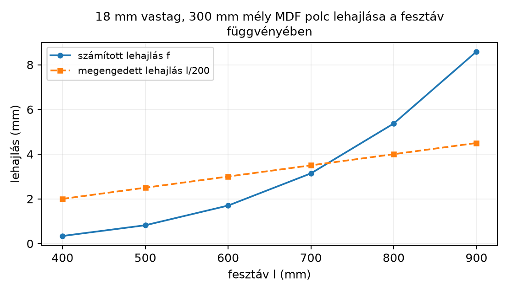

A vevő szekrényt rendel. A férfi hosszú télikabátot szeretne akasztani, a gyerek játékait mély fiókokba tenné, a feleség szakácskönyvei viszont keskeny, könnyen átlátható polcokra valók. Ugyanaz a szaktudás mindegyikhez, mégis teljesen más szerkezetet fogunk választani. Ha rossz szerkezetet választunk, a szekrény púpos lesz, a polc belóg, a betét megreped, vagy a bútor egyszerűen elnehezedik és nem lehet mozgatni.
Ebben az alfejezetben a szekrényeket nem faanyag szerint, hanem tartószerkezetük szerint tanuljuk meg csoportosítani, és megtanuljuk kiválasztani a feladathoz illőt. Ez az alap ahhoz, hogy a következő alfejezetben (fiókok, ajtók) és a gyártástechnológiáknál pontosan tudjuk, mihez mit kell rögzíteni.
Képzelj el két szekrényt a műhely rajzasztalán.
Az első egy hagyományos, nagymama lakásából származó tömörfa ruhásszekrény. Ha belenézel az ajtaja mögé, nem tömör, vastag falú dobozt látsz, hanem egy vékonyabb fakeretből álló várat. A váz függőleges oszlopokból és vízszintes kereszthevederekből áll, a köztük lévő üres mezőkbe pedig vékonyabb betétek futnak be. Az egész könnyű, de merev.
A második egy modern, fehér konyhaszekrény. Itt nincs faoszlop és betét. A bútor 18 mm vastag, egyenletes felületű lapokból összeállított, zárt doboz (korpusz). Az oldalak, a tető, a fenék és a hátfal együtt adják a merevséget, a homlokzaton pedig szorosan illeszkedő ajtók és fiókok sorakoznak.
Ez a két kép a két fő szerkezeti világ: a keretszerkezet és a kávaszerkezet.
A szekrénytípusokat a tárolni kívánt tárgy és a helyiség funkciója határozza meg.
Ezeket a típusokat a gyakorlatban e négy fő tartószerkezet valamelyikéből építjük fel: keret, káva (korpusz), állvány vagy vegyes szerkezet.
Definíció. Keretszerkezet. Olyan tartószerkezet, amelyben a szekrény oldalát, ajtaját vagy hátát vékonyabb keresztmetszetű, összecsapozott vagy dűbelezett lécek – oszlopok, hevederek – alkotják. A mezőkbe keskenyebb horonyba vagy falcba engedett betét kerül. A betét nem ragasztva, hanem mozgásbiztosan rögzül, hogy a fa dolgozhasson.
Definíció. Kávaszerkezet (korpusz). Olyan dobozszerű szerkezet, amelyet sík lapokból – oldal, tető, fenék, hátfal – állítunk össze. A merevséget a lapok egymáshoz rögzítése (tiplik, lamelló, korpuszkötők, csavarok) és a hátfal adja. Modern, iparosított, anyagtakarékos és méretpontos gyártást tesz lehetővé.
Definíció. Állványszerkezet. A terhet a padlóra hordó, lábakra vagy lábazati elemekre állított polc- vagy tartórendszer. Oldala nem feltétlenül zárt; a merevséget gyakran hátsó keresztrács vagy feszítőelem biztosítja.
Definíció. Vegyes szerkezet. A fenti szerkezetek kombinációja. Például egy kávaszerkezetű korpuszra keretszerkezetű ajtót teszünk, vagy egy állványszerkezetű lábas asztalkához fiókos korpuszt rögzítünk.
A szekrények méretei a felhasználóhoz és a tárolt dolgokhoz igazodnak. A rajzon és a szabásjegyzékben a méreteket hossz × szélesség × vastagság (h × sz × v) sorrendben, mm-ben adjuk meg. Az alábbi mintaértékek beépített, álló szekrényekre vonatkoznak, és tájékoztató jellegűek; egyedi bútoroknál a vevői igény és a helyszíni adottság dönt.
| Szekrénytípus | Mélység (mm) | Magasság (mm) | Megjegyzés |
|---|---|---|---|
| Könyvszekrény | 250–300 mm | 1 800–2 200 mm | Polcfesztáv 600–900 mm |
| Ruhásszekrény | 550–600 mm | 1 900–2 300 mm | Akasztórúdhoz mérve |
| Cipős szekrény | 250–350 mm | 900–1 200 mm | Döntött belső polcok |
| Éjjeliszekrény | 350–450 mm | 450–600 mm | Ágymagassághoz igazítva |
| Tálaló | 400–500 mm | 800–900 mm | Tálalási magassághoz igazítva |
| Konyhai alsó szekrény | 550–600 mm | 720–900 mm | Munkalap nélkül |
Megjegyzés. A méretek kényelmi célokat szolgálnak, pontos szabványértéket a tervezés előtt a hatályos bútoripari előírásokban és a vevői specifikációban ellenőrizd.
A keretszerkezetű szekrény akkor a legjobb választás, ha tömör fából dolgozunk, és a bútor légies, könnyen javítható, ugyanakkor hosszú élettartamú legyen. Ilyen például egy klasszikus tölgy ruhásszekrény.
Felépítése:
Miért jó? Ha a tömörfa oldal egyetlen széles lapból állna, zsugorodásnál megrepedne a merev rögzítés miatt. A keret és a mozgó betét viszont elnyeli a fa méretváltozását.
A modern asztalosműhelyekben a leggyakoribb. Alapja a sík bútorlap – leggyakrabban 16–19 mm-es laminált forgácslap, MDF, rétegelt lemez vagy táblásított tömörfa lap. A munkadarabokat élére merőlegesen, derékszögben rögzítjük, így dobozt (korpuszt) kapunk.
Felépítése:
Kötőelemek: A lapokat korpuszkötő csavarral, tiplivel (köldökcsappal) vagy lamellóval rögzítjük. A vasalatok típusát és furatkiosztását a Bútorvasalatok, kötővasalatok, csavarok és kötőelemek alfejezet tárgyalja.
Figyelem. A kávaszerkezetű korpusznál a hátfal nem pusztán kozmetikai elem. Ha a hátfalat kihagyjuk, vagy csak néhány ponton rögzítjük, a szekrény elöl-hátul megdőlhet, oldalra elcsavarodhat; nútba engedett vékony hátfalnál (pl. 3 mm HDF) a merevséget a teljes kerületen való rögzítés adja; a sarokkötések meglazulása miatt a szekrény „rombuszosodó” mozgást végez.
Az állványszerkezet nyitott polcos elem. Ilyen a klasszikus műhely-polc, a kovácsoltvas-konzolos könyvespolc. Itt a teher a függőleges oszlopokra vagy lábakra hárul. A merevítést oldalsó átlós rács vagy a falra rögzített konzol adja.
A vegyes szerkezet a gyakorlatban a leggyakoribb. Például egy konyhaszekrénynél a korpusz kávaszerkezetű, a homlokzati ajtó keretezett (MDF vagy tömörfa keret közepén betéttel). Egy cipős szekrénynél gyakran állványszerkezetre kerül egy ferde polcokból álló, kávás fiókrész.
A polc a szekrény leggyakrabban túlterhelt része. A fesztáv a polc két alátámasztása közötti szabad távolság. Minél hosszabb a polc, annál jobban lehajlik.
Szabály. A polc akkor megfelelő, ha a lehajlása terhelés alatt a fesztáv -ánál, legfeljebb -énél nem nagyobb (tájékoztató érték; a pontos határ a bútoripari szabványban és a vevői elvárásban van). Például 800 mm-es polcnál a megengedett lehajlás mm.
A faanyag mechanikai tulajdonságaiból (lásd a A fa mechanikai tulajdonságai és tartóssága alfejezetet) a lehajlás kéttámaszú, egyenletesen megoszló teherrel terhelt tartóként számolható:
ahol: - : lehajlás mm-ben, - : a polcra jutó egyenletesen megoszló terhelés N/mm-ben, - : a fesztáv mm-ben, - : a polc anyagának rugalmassági modulusa N/mm²-ben, - : a polckeresztmetszet inercianyomatéka mm⁴-ben.
Téglalap keresztmetszetre:
ahol a polc szélessége (mélysége), a polc vastagsága mm-ben.
Fontos. A polc lehajlását a vastagság (v) harmadik hatványa határozza meg. Ezért egy vékony polc alá szerelt vastag élélc (fióknyelv, előlapi merevítő léc) drasztikusan növeli a merevséget.
Helyzet: Egy irodai polcrendszerbe 850 mm széles fülkébe MDF polcot készítünk. A polc teljes területére elosztva kb. 40 kg könyvet fognak tenni. Megfelel-e a 18 mm vastag, 300 mm mély MDF polc?
Adat: - Polc anyaga: MDF. Tájékoztató rugalmassági modulusa (ellenőrizendő: gyártói adatlap). - Polc mélysége . - Polc vastagsága . - Fesztáv .
1. lépés: A terhelés számítása. A 40 kg tömegű teher súlya: (a nehézségi gyorsulást -re kerekítjük). A fesztávra eső megoszló terhelés: .
2. lépés: A keresztmetszet inercianyomatéka.
3. lépés: A lehajlás. . A számláló: . A nevező: .
4. lépés: Ellenőrzés. A megengedett lehajlás -hoz: . A számított > . A 18 mm-es MDF polc tehát NEM felel meg, túlságosan belóg.
Megoldás variációk:
Vastagabb anyag: Válasszunk 25 mm-es MDF-et. Új inercianyomaték: . Új lehajlás: . . Megfelel!
Elöli-merevítő léc: A polc elülső éle alá ragasztással és csavarral egy -es tömörfa élce kerül. Ez gyakorlatilag úgy viselkedik, mintha a polc vastagabb lenne, és a polc csak hátul ül a polctartón, elöl a vasalat is fogja.
Számítási megjegyzés. A számítás becslés. A tényleges lehajlás függ a polc eloszló terhelésétől, az anyag időbeli kúszásától (főleg MDF-nél) és a polctartók megfogásától. Gyártás előtt a gyártói adatlap és a bútoripari méretezési előírás a mérvadó.
A jobb oldali görbéken jól látszik a vastagság harmadik hatványának hatása: a 25 mm-es polc ugyanakkora fesztávon a 18 mm-esnek alig több mint harmadát hajlik. Az interaktív kalkulátorban az anyag, a méretek, a teher, az elülső merevítő léc és a kúszás is állítható.
A polcok rögzítésének módja határozza meg az állíthatóságot.
Az állítható furatrendszernél a sorok osztása általában , az elülső fúrási sortengely a bútor elülső élétől -re van (tájékoztató, 32-es rendszer). A polctartók beszerelésénél ügyelned kell, hogy az összes tartó ugyanabba a magassági sorba kerüljön, különben a polc billeg.
Bal oldalon a keretszerkezet: a két oszlop (1) és a két keresztheveder (2) csappal (3) kötődik, a betét (4) a horonyban játékkal ül. Jobb oldalon a korpusz lapjai: tető (5), oldalak (6) a furatsorral, polc (7), hátfal (8) a nútban, fenék (9) és lábazat (10). Az interaktív változatban a csúszkával szét- és összerakható a két szerkezet.
Az alábbi számított értékek azt mutatják, hogyan nő a lehajlás a fesztáv növelésével egy 18 mm vastag, 300 mm mély MDF polcnál.

A lehajlás görbéje meredeken emelkedik, mert a lehajlás a fesztáv negyedik hatványával arányos, a megengedett határ viszont csak egyenesen nő. A két vonal kb. 725 mm-nél metszi egymást: a metszéspont fölött a polc túlságosan belóg, ezért a 18 mm-es MDF polc ekkora terhelésnél 700 mm-es fesztávig felel meg, 800 mm-nél már nem. Ezért a hosszú polcokat feltétlenül alá kell támasztani, elöli merevítéssel ellátni, vagy vastagabb lapból készíteni.
Ez a rész a lapalkatrészek gépi szabása nélkül, a szerkezeti összeállításra koncentrál. A gépi szabás előtt tanulmányoznod kell a Lapszabászgépek, táblafelosztók és a fűrészelési hibák és a Tanulóműhely, alap szerszámkészlet és a biztonságos gyakorlás határai alfejezeteket.
A szekrény összeállítása után az alábbiakat ellenőrizd.
Hiba: A tömörfa betét a keretben megreped. Ok: A betétnek nem hagytak mozgási játékot, vagy a betétet körbe beragasztották a horonyba. Megoldás: A betétet mindig szárazon, 2–3 mm-es játékkal helyezd a horonyba. Csak a betét közepén, egy ponton (pl. egy rejtett csappal) szabad rögzíteni, hogy a kiterjedése irányban el tudjon mozdulni.
Hiba: A polc középen belóg. Ok: A polc fesztávja túl nagy a terheléshez képest, vagy a lap túl vékony. Megoldás: Vastagabb lapot, erősebb anyagot (pl. MDF helyett rétegelt lemezt) válassz, vagy a polc elülső élére szerelj merevítő lécet/zártszelvényt. Ha a bútor belső kialakítása engedi, csökkentsd a fesztávot egy középső osztólappal.
Hiba: A szekrény a helyén „rombuszosodik”, az ajtók a sarkuknál összeérnek, a teteje nem zár. Ok: A hátfal hiánya vagy rossz rögzítése miatt a korpusz elvesztette a derékszögű merevségét. Megoldás: A hátfalat a korpusz teljes kerületén, legfeljebb 100–150 mm-es osztással (tájékoztató, ellenőrizendő: vasalat- és lapgyártói ajánlás) csavarral vagy facsavarral rögzíteni kell. A szekrényt a falhoz is ki lehet kötni, ha a stabilizálást fokozni kell.
Eset: Egy asztalos tanuló könyvespolcot készített a hálószobába. A fal hossza 2 200 mm volt, így a polcokat 2 000 mm-es fesztávval, 18 mm-es laminált forgácslapból méretre vágatta. A könyvek felrakása után néhány hét alatt a polcok középen látványosan belógtak, a széleken a könyvek befelé dőltek. A reklamáció során kiderült, hogy a vevő nemcsak díszkönyveket, hanem nehéz lexikonokat és fotóalbumokat tárolt ott. A műszaki ellenőrzés kimutatta, hogy a lehajlás meghaladta a 15 mm-t. A hibát a tanuló azzal követte el, hogy a polc hosszúságát az oldalfal hosszához igazította, és egyetlen középső alátámasztást sem tervezett. A tanulság: a polc nem lehet tetszőlegesen hosszú. A javítás úgy történt, hogy a polcrendszert függőleges osztólapokkal leosztották 600 mm-es szakaszokra, így a polcok lehajlása a tűréshatár alá került, és a könyvek is jobban elfértek.
1. feladat (A) – Sorolj fel négy szekrénytípust, és írd mindegyik mellé a hozzá illő jellemző mélységet.
2. feladat (A) – Nevezd meg a keretszerkezetű szekrény három fő alkotóelemét, és írd le a betét helyes beépítését.
3. feladat (B) – Számítsd ki a polc lehajlását. Adott: MDF polc, , , , , .
4. feladat (B) – Az előző feladat eredménye alapján állapítsd meg, hogy megfelel-e a polc az lehajlási határnak. Ha nem, milyen vastagságú MDF-re cserélnéd a polcot?
5. feladat (C) – Egy megrendelő 1 800 mm széles, súlyos könyveket tároló könyvespolcot szeretne, de a helyiségbe nem fér be 25 mm-nél vastagabb polc. Javasolj szerkezeti megoldást, rugalmasan.
6. feladat (D) – Tervezz meg egy beépített, 600 mm mély, 800 mm széles konyhai alsó szekrényt: korpuszanyag, hátfal, lábazat, polc fesztávja és vastagsága. Ellenőrizd a 18 mm-es, 300 mm mély polc lehajlását 20 kg egyenletes teherre (), és foglald a szerkezetet 4–5 számozott lépésbe.
Önellenőrzés – válaszok
1. feladat (A) – Például: könyvszekrény (250–300 mm); ruhásszekrény (550–600 mm); konyhai alsó szekrény (550–600 mm); tálaló (400–500 mm). (Más ésszerű, indokolt típus is elfogadható.)
2. feladat (A) – Oszlopok, kereszthevederek, betét. A betétet a horonyba 2–3 mm-es játékkal, szárazon, csak egy ponton rögzítve kell beépíteni, hogy a fa mozoghasson.
3. feladat (B) – Adott: , , , , . Keresett: . 1. . 2. . . Számláló: . Nevező: . .
4. feladat (B) – A megengedett lehajlás: . , tehát nem felel meg. A legfeljebb 3,5 mm-es lehajláshoz nagyobb inercianyomaték kell. Ha -re cseréljük: . Új lehajlás: . Ez már megfelel. (Tehát a 18 mm vastag polc megfelel.)
5. feladat (C) – Ha a 25 mm-es vastagságot nem lehet növelni, a polc fesztávját csökkenteni kell. A javaslat: szereljünk be középen függőleges osztólapot vagy kettős könyöktartót, így a szabad fesztáv 900 mm alá csökken. Alternatívaként a polc elülső és hátsó élébe ragasztott, mélyebben futó fióknyelv merevítő léc is növeli az inercianyomatékot anélkül, hogy a látvány zavaró lenne.
6. feladat (D) – Minta a konyhaszekrényhez: korpusz 18 mm-es fóliázott forgácslap; hátfal 4 mm-es HDF (körben rögzítve); lábazat magassága 100 mm; polc 18 mm vastag. Belső fesztáv: . Teher: ; . ; a megengedett érték , tehát a polc megfelel (tájékoztató számítás). Lépések: 1. a homlokzati rajz alapján a korpusz kész méretének meghatározása; 2. a lapok szabása hosszra és szélességre; 3. élzárás; 4. a polctartó- és vasalatfuratok fúrása a 32-es rendszer szerint; 5. a korpusz összeszerelése, majd hátlapozás.
A szekrényeket a tartószerkezetük szerint osztályozzuk. A keretszerkezet oszlopokból és kereszthevederekből áll, a mezőkbe mozgó betét kerül. Ez a tömörfa bútorok ideális szerkezete, mert elnyeli a fa dagadását és zsugorodását. A kávaszerkezet (korpusz) sík lapokból összeállított doboz. A merevségét a lapkapcsolatok és a hátfal adják. Az állvány- és vegyes szerkezet lábakra támaszkodó vagy más szerkezettel épített kombináció. A polcok méretezésénél a fesztáv és a lehajlás a döntő. A lehajlás kéttámaszú tartóval: , ahol . Továbbvitt eredmény. Ez a szerkezeti felosztás alapozza meg a fiókok és szekrényajtók szerkezetét Fiókok és szekrényajtók szerkezete; fiókos éjjeliszekrény szerkezeti rajza, a korpuszbútorok gyártástechnológiáját Korpuszbútorok és tároló bútorok gyártástechnológiája, és a szerkezetek szerelését Idegencsapos és ragasztott szerkezetek szerelése; szorítóeszközök és prések. A polcméretezésnél tanult lehajlási képletet a lépcsők méretezésénél is használjuk Falépcsők szerkesztése és készítése.
Az alfejezet a faipari szerkezettan és a bútoripari gyártás általános szakmai gyakorlatán alapul. Az ergonómiai méretek (polcmélységek, magasságok, ruhaakasztó rúd magassága) tájékoztató értékek, a konkrét megrendelésnél a vevő méretei és a bútoripari szabványok az irányadók. A polc lehajlási képletének alkalmazásához használt rugalmassági modulus tájékoztató anyagjellemző, a pontos érték a lapgyártó műszaki adatlapjától és a faanyagfizikai táblázatoktól függ (ellenőrizendő: gyártói adatlap, aktuális EN szabvány a bútoripari terhelési követelményekhez). A határ a gyakorlatban elterjedt tervezési irány, a pontos előírás a szerkezeti méretezési szabványban és a termékszabványban ellenőrizendő.